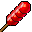
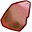
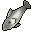

Hexathlon
A missão do Pappa, em Argent: seis tarefas pelas três cidades e um chefe do seu nível, tudo no mesmo dia, uma vez por dia, sozinho. Leva cerca de meia hora e rende EXP pela sua faixa de nível (2 níveis até o 49, menos nos níveis altos), gold, um item da Store e, a cada 7 voltas, uma caixa-surpresa. Cada volta completa traz uma lembrança do Rei Pirata Roland.
O que é
O velho Pappa foi grumete no navio de Roland. O Capitão fazia todo marujo novo cumprir "os Seis": seis serviços entre o nascer e o pôr do sol e uma briga para fechar o dia. Hoje o Secretário Salvier paga o Pappa para manter a tradição, porque a Hexathlon leva os relatórios de uma cidade para outra sem passar pela Marinha.
Ela abre junto com a história principal: depois da primeira missão (Secretary Message, nível 10), o próprio Salvier fala do Pappa. A cada volta completa o Pappa conta uma lembrança do Capitão; são sete, e elas ganham sentido conforme a história avança.
Quanto vale
| Seu nível | EXP da volta inteira | Monstros do seu nível por nível |
|---|---|---|
| 10–49 | 200% de um nível | 13–60 |
| 50–59 | 160% de um nível | 60–70 |
| 60–69 | 120% de um nível | 75–90 |
| 70–79 | 85% de um nível | 105–130 |
| 80+ | 33% de um nível | ~300 |
A conta: do 30 em diante a volta vale mais ou menos o mesmo que caçar uns 100 monstros do seu nível, o tempo que ela leva. Embaixo ela para em 2 níveis, porque lá um nível passa em poucos minutos. É um empurrão para quem entra todo dia, não o caminho principal: quem quer subir rápido continua caçando e fazendo a história.
As tarefas
| # | Tarefa | Quem pede | O que fazer | Entrega | Parte da EXP |
|---|---|---|---|---|---|
| 1 | The Word | Pappa, Argent 2222, 2768 | Levar Pappa's Letter a Shaitan. | Chairman Guile, Shaitan City 873, 3545 | 6% |
| 2 | The Sick | Chairman Guile | Comprar 1  Super Candy Stick do Physican Ditto, Argent 2250, 2770. | Nurse Gina, Argent 2244, 2770 | 6% |
| 3 | The Fields | Nurse Gina | Abaixo do nível 40: 10 Grassland Elks em Shepherd Plains 1390, 2658. Do 40 em diante: 10 Pumpkin Knights 622, 2864. | Nurse Gina | 14% |
| 4 | The Haven | Nurse Gina | 2 Wood e 2  Iron Ore (árvores e pedras na saída de cada cidade: Argent 2131, 2730, Thundoria 712, 1715, Shaitan 1031, 3556, Icicle 1212, 578) e 2 Sashimi (cardumes ao lado dos portos, de barco). | Greg, Abandon Mine Haven 1883, 2805 | 14% |
| 5 | The Small Ones | Greg | 2 Elven Signet: a fada equipada deixa na mochila sozinha, alguns por hora. | Forbei, Argent 2226, 2726 | 10% |
| 6 | The Cold Watch | Forbei | Levar os relatórios (outra Pappa's Letter) até Icicle. O Ray avisa do chefe final. | Icicle Swordsman Ray, Icicle Castle 1365, 570 | 17% |
Parte da EXP da volta que cada tarefa dá; o chefe dá os outros 33%. No diário de missões (Alt+Q), clique no nome sublinhado para andar até lá.
O chefe final
Ao receber os relatórios, o Ray avisa que um ladrão de mensageiros seguiu você. Assim que você sair a pé de qualquer cidade em Ascaron, Magical Ocean ou Deep Blue, ele aparece do seu lado. Derrote-o para fechar a volta (33% da EXP dela, além do gold e do drop de mini-boss dele).
O chefe é o mini-boss mais forte que não passa do seu nível:
| Seu nível | Chefe | Nível dele |
|---|---|---|
| 10–18 | Vampiric Elk | 14 |
| 19 | Snowy Snail Monarch | 19 |
| 20–22 | Smuggler Leader | 20 |
| 23–24 | Violent Air Porky | 23 |
| 25–27 | Bandit Leader - Adder | 25 |
| 28–29 | Sand Bandit Leader - Garet | 28 |
| 30–32 | Berserk Mad Boar | 30 |
| 33–34 | Grassland Wolf Champion | 33 |
| 35–39 | Atrocious Yeti King | 35 |
| 40–44 | Malicious Azure Siren | 40 |
| 45–49 | Master Swamp Bog | 45 |
| 50–54 | Master Swamp Watcher | 50 |
| 55–64 | Swamp Champion | 55 |
| 65–84 | Pirate Ringleader | 65 |
| 85+ | Evil Tribal Chieftian | 85 |
Se ele sumir sem morrer (10 min) ou se você morrer, ele volta na próxima vez que você sair de uma cidade. No mar ele não aparece. Enquanto ele falta, a Alt+Q mostra Hexathlon VII: The Raider. Do 10 ao 13, o primeiro chefe ainda é um pouco acima de você: leve poções.
Recompensa da volta completa
- EXP pela faixa de nível (tabela acima), dividida entre as tarefas e o chefe.
- Gold de 60 monstros comuns do seu nível: nível 20: 23 mil · nível 40: 62 mil · nível 60: 113 mil · nível 80: 173 mil.
- 1 item da Store de evolução, forja ou fada (frutas e amplificadores de EXP, estabilizadores, alicates de slot, ovos...), sorteado; vai para a Temporary Bag.
- 1 caixa-surpresa a cada 7 voltas.
- Uma lembrança do Pappa sobre o Rei Pirata.
O que preparar
- Livros de coletaWoodcutting, Mining e Fishing, 1.000 gold cada nos mercadores (Jimberry em Argent, Amos em Shaitan, Palpin em Icicle). Veja Profissões.
- BarcoO Sashimi vem dos cardumes no mar. O primeiro barco sai no nível 15 (Navegação).
- Fada equipadaÉ ela que faz os Elven Signets, com stamina. A primeira vem do Egg of Life das missões iniciais (Fadas).
- ViagemOs teleportes e as passagens vão para qualquer cidade desde o começo. O botão Home volta para a cidade a cada 10 min.
Regras
- Uma volta por diaPegue com o Pappa e faça as seis tarefas e o chefe de uma vez; quem recebe uma entrega já dá a próxima tarefa. Depois do chefe, a próxima volta abre no dia seguinte (meia-noite, hora do servidor).
- Sem prazoParou no meio? A volta continua no outro dia do ponto em que ficou, sem perder nada. O Pappa só oferece outra depois que esta fecha.
- EXP pela faixa de nívelA EXP é calculada na hora de cada entrega, pelo seu nível atual (tabela acima).
- SozinhoNenhuma tarefa pede grupo. Na versão original a última pedia um grupo de três níveis diferentes.
- !hexaNo chat: mostra a próxima tarefa e de quem pegar, quanto a volta vale no seu nível e qual chefe vem para você. Ao entrar no jogo, um aviso diz quando ela está pronta ou o que falta.
As falas do jogo estão em inglês.